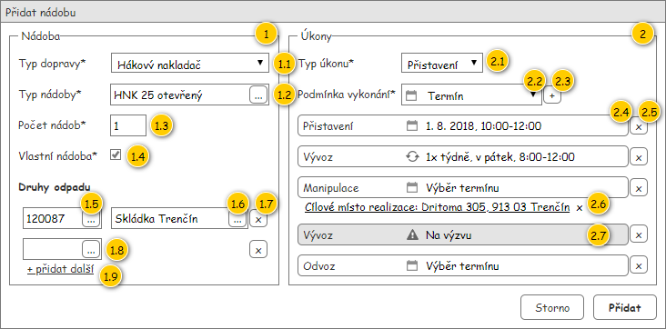
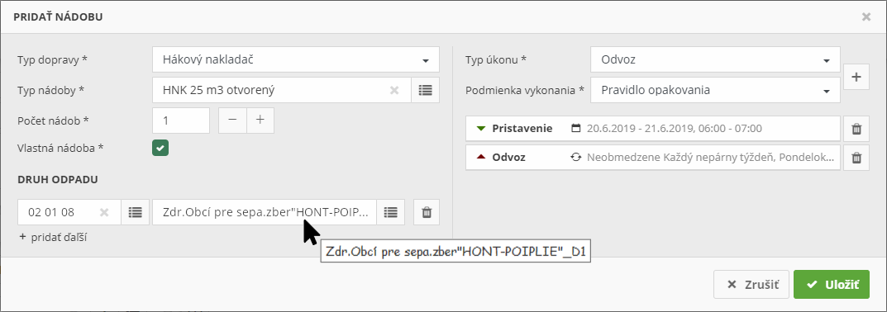

Formulář pro přidání Objednané nádoby spolu s Objednanými úkony. V případě editace je na vstupu předána instance entity Objednaná nádoba.
Poznámka: Formulář je možné otevřít pouze v případě, kdy je umožněna editace Objednané nádoby.
Formulář je složen ze dvou částí – jedna slouží k nastavení parametrů Objednané nádoby spolu s přiřazením Druhů odpadu, druhá pak pro vytvoření Objednaných úkonů.

| Callout | Komponenta | Nadpis | Typ komponenty | Příklad hodnoty | Hodnota | Výchozí hodnota | Formát | Zpřístupněná | Viditelná | Chování | Validace | Poznámka |
|---|---|---|---|---|---|---|---|---|---|---|---|---|
| 1 | Skupina Objednaná nádoba | Nádoba | – | – | – | – | – | Vždy | Vždy | – | – | – |
| 1.1 | Typ dopravy | Typ dopravy* | ComboBox | Hákový nakladač | Entita Typ dopravy – atribut Typ dopravy entity Typ nádoby – atribut Typ nádoby entity Objednaná nádoba. Dostupné jsou všechny takové Typy dopravy, u kterých je hodnota atributu Je k dispozici rovna TRUE. | V pořadí první dostupný záznam. | Vždy | Vždy | Změna typu dopravy | Povinné. | – | |
| 1.2 | Typ nádoby | Typ nádoby* | AutoSuggestTextBox | HNK 25 otevřený | Entita Typ nádoby – atribut Typ nádoby entity Objednaná nádoba. Dostupné jsou všechny takové aktivní Typy nádob, u kterých hodnota atributu Typ dopravy odpovídá nastavenému Typu dopravy (komponenta 1.1). | – | Pokud je pro zvolený Typ dopravy (komponenta 1.1) umožněn výběr Typu nádoby (vyhodnoceno dle atributu Technická specifikace odpovídajícího Typu dopravy). | Vždy. | – | Povinné, pokud není splněna ani jedna z dále uvedených podmínek:
Není možné zadat libovolnou hodnotu. | Výběr omezen dostupnými hodnotami. | |
| 1.3 | Počet nádob | Počet nádob* | TextBox | 2 | Entita Objednaná nádoba. | 1 | Vždy | Vždy | – | Povinné. Celé kladné číslo. Povolený rozsah hodnot se odvíjí od zvoleného Typu dopravy (komponenta 1.1), to je vyhodnoceno dle atributu Technická specifikace daného Typu dopravy. | – | |
| 1.4 | Vlastní nádoba | Vlastní nádoba* | ChechBox | FALSE | Entita Objednaná nádoba. | TRUE | Pokud je pro zvolený Typ dopravy (komponenta 1.1) umožněno nastavení vlastnictví nádoby (vyhodnoceno dle atributu Technická specifikace odpovídajícího Typu dopravy). | Vždy | – | Povinné, pokud není splněna ani jedna z dále uvedených podmínek:
| – | |
| 1.5 | Druh odpadu | Druhy odpadu* Poznámka: Nadpis je uveden pouze jednou, a to nad kolekcí s druhy odpadu. | AutoSuggestTextBox | 17 20 13 | Entita Druh odpadu – atribut Druh odpadu entity Vývoz na Likvidační místo – atribut Vývozy na Likvidační místo entity Objednaná nádoba. | Pokud není k dispozici žádný Druh odpadu, je automaticky přidáno jedno pole pro zadání Druhu odpadu – naznačeno v drátovém diagramu jako komponenta 1.8. | Vždy | Vždy | Nastavení druhu odpadu | Musí být přidán alespoň jeden Druh odpadu – výjimkou tvoří případy, kdy jsou přidány pouze Objednané úkony uvedených typů:
Není možné zadat libovolnou hodnotu. | Výběr omezen dostupnými hodnotami. Pokud je stisknuto tlačítko pro smazání hodnoty v rámci ovládacího prvku, je vyvoláno stejné chování jako při stisknutí tlačítka pro odebrání druhu odpadu – komponenta 1.7. | |
| 1.6 | Likvidační místo | – | AutoSuggestTextBox | Kompostáreň Trenčín (V) | Entita Vývoz na likvidační místo – atribut Vývozy na likvidační místo entity Objednaná nádoba. | – | Kód nakládání nakonec není evidován jako číselník. | Vždy | Pokud je vyplněn odpovídající Druh odpadu. | – | Povinné pro každý přidaný Druh odpadu. Není možné zadat libovolnou hodnotu. | Pokud délka hodnoty přesahuje délku ovládacího prvku, je zobrazen ToolTip s obsaženou hodnotou. Uživatel sice pracuje s Likvidačními místy, na pozadí je však využita entita Druh odpadu likvidačního místa. Důvodem je nutnost vyhodnocení Likvidačních míst dle jimi odebíraných Druhů odpadu. Pro uživatele pak mohou být Likvidační místa zobrazena duplicitně, a to pro každý „podporovaný“ kód nakládání. V rámci Objednávky jsou informace uloženy ve formě Vývozů na likvidační místo. Dostupné záznamy pro nastavení hodnoty však vychází z entity Druh odpadu likvidačního místa. V rámci odpovídajícího Vývozu na likvidační místo pak nenastavujeme pouze odpovídající Likvidační místo (atribut Likvidační místo), ale také kód nakládání (atribut Kód nakládání). |
| 1.7 | Odebrání druhu odpadu | – | Button | – | – | – | – | Vždy | Pokud je zobrazeno odpovídající pole pro nastavení Druhu odpadu (komponenta 1.5, případně 1.8). | Pokud dojde k odebrání posledního Druh odpadu, je automaticky přidáno jedno pole pro zadání Druhu odpadu – naznačeno v drátovém diagramu jako komponenta 1.8. | – | – |
| 1.8 | Druh odpadu – nevyplněn | – | – | – | – | – | – | – | – | – | – | Odpovídá komponentě 1.5 – jedná se o variantu možného zobrazení komponenty, kdy není vyplněn Druh odpadu. |
| 1.9 | Přidání druhu odpadu | – | Button | – | – | – | – | Vždy | Vždy | Po stisknutí tlačítka je přidán další řádek, který obsahuje pouze prázdné pole pro zadání Druhu odpadu (komponenta 1.8). | – | – |
| 2 | Skupina Objednané úkony | Úkony | – | – | – | – | – | Vždy | Vždy | – | – | – |
| 2.1 | Typ úkonu | Typ úkonu* | ComboBox | Přistavení | Entita Objednaný úkon – atribut Objednané úkony entity Objednaná nádoba. | Dostupné typy úkonu | Vždy | Vždy | Dostupné typy úkonu | – | – | |
| 2.2 | Typ podmínky vykonání | Podmínka vykonání* | ComboBox | Termín | Entita Objednaný úkon – atribut Objednané úkony entity Objednaná nádoba. | Výzva | Vždy | Vždy | – | – | – | |
| 2.3 | Přidání objednaného úkonu | – | Button | – | – | – | – | Vždy | Vždy | Přidá Panel s objednaným úkonem dle nastavených hodnot, a to ve výchozím stavu. Mohou pak nastat situace, kdy přidání Panelu s objednaným úkonem není možné. Konkrétní situace jsou popsány samostatně, viz Přidání panelu s objednaným úkonem není možné. Pokud dojde k přidání Objednaného úkonu odpovídajícího typu, dochází k zobrazení ovládacího prvku pro nastavení další lokace (viz Nastavení další lokace). | – | – |
| 2.4 | Objednaný úkon | – | Button | – | Entita Objednaný úkon – atribut Objednané úkony entity Objednaná nádoba. | – | Panel s objednaným úkonem | Panel s objednaným úkonem | Vždy | Panel s objednaným úkonem | Musí být přidán alespoň jeden Objednaný úkon. | – |
| 2.5 | Odebrání objednaného úkonu | – | Button | – | – | – | – | Vždy | Pokud je přidán odpovídající Objednaný úkon. | Odebere odpovídající panel s Objednaným úkonem. | – | – |
| 2.6 | Objednaný úkon s možností nastavit další lokaci | – | Button | – | – | – | – | – | – | – | – | Odpovídá komponentě 2.4 – jedná se o variantu, kdy je nastaven typ úkonu na některou z definovaných hodnot. Je pak možné zadat další lokaci odpovídajícího typu (viz Nastavení další lokace). |
| 2.7 | Objednaný úkon bez možnosti dalšího nastavení | – | Button | – | – | – | – | – | – | – | – | Odpovídá komponentě 2.4 – jedná se o variantu, kdy je nastaven Typ podmínky vykonání na hodnotu Výzva. V tomto případě není umožněno další nastavení. |
Pokud dojde ke změně Typu dopravy a již bylo vyplněno pole pro zadání Typu nádoby či přidán alespoň jeden Objednaný úkon, je uživatel dotázán, zda si opravdu přeje změnit Typu dopravy – MSG_CONF_CANCEL_CHANGE_TYPE_OF_TRANSPORT, viz Systémové hlášky.
Pokud uživatel akci potvrdí, dojde k následujícím akcím:
Poznámka: V případě, kdy je nastaven Typ dopravy na Valník, nejsou dostupné žádné Typy nádob, a není tedy ani vybrána žádná hodnota (obecně vyhodnoceno dle atributu Technická specifikace daného Typu dopravy). V tuto chvíli není pole pro zadání Typu nádoby dostupné.
Jinak nedojde ke změně Typu dopravy.
Ve výchozím stavu je pole pro zadání Druhu odpadu prázdné. Pokud dojde k vyplnění hodnoty, je zobrazeno pole pro výběr Likvidačního místa a tlačítka pro odebrání Druhu odpadu (komponenty 1.6 a 1.7).
Při zadání či změně Druhu odpadu dojde k aktualizaci dostupných Likvidačních míst a případnému nastavení hodnoty.
Dostupné Druhy odpadu se odvíjí od typu Položky objednávky (atribut Podle smlouvy), pro kterou je Objednaná nádoba přidávána:
Dostupná Likvidační místa pak odpovídají zvolenému Druhy odpadu, viz Dostupná likvidační místa.
Dostupná Likvidační místa se odvíjí od Druhu odpadu, který je specifikován v rámci odpovídající pole tohoto formuláře (viz Nastavení druhu odpadu). Pracujeme tedy s entitou Druh odpadu likvidačního místa, dostupné jsou pak všechny takové její instance, které splňují všechny dále uvedené podmínky zároveň:
Na výstupu algoritmu je tedy předána kolekce nalezených Druhů odpadu likvidačního místa.
Poznámka: Provozovna odpovídající Objednávky lze získat z Objednané nádoby řešené v tomto UC (atribut Provozovna entity Objednávka – atribut Objednávka entity Položka objednávky – atribut Položka objednávky entity Objednaná nádoba).
Interní poznámka: Uvedená logika se liší dle verze aplikace…
Dostupné Typy úkonu jsou vyhodnocovány dle několika podmínek, ty si nyní popíšeme…
Panel s Objednaným úkonem je složen ze dvou částí – v první je zobrazen Typ úkonu, v druhé pak Typ podmínky vykonání, případně konkrétní hodnota.
Typ úkonu je kromě názvu reprezentován i ikonou, která je umístěna před ním – viz tabulka.
| Typ úkonu | Ikona | Barva |
|---|---|---|
| Přistavení | ra-triangle-down | #3b7700 |
| Vývoz | ra-return | #f6981f |
| Výměna | ra-triangle-up-down | výchozí barva textu |
| Odvoz | ra-triangle-up | #710000 |
| Manipulace | ra-object-move | výchozí barva textu |
| Sběr | ra-insert | výchozí barva textu |
| Rozvoz | ra-arrow-fast | výchozí barva textu |
| Vývoz mezi LM | ra-recycle | výchozí barva textu |
| Přeprava | ra-track | výchozí barva textu |
Pokud je Typ úkonu nastaven na jednu z dále uvedených hodnot, musíme uživateli umožnit nastavení další lokace pro specifikaci Objednaného úkonu (naznačeno v rámci komponenty 2.6). Chování je pak popsáno samostatně, viz Nastavení další lokace.
Typ podmínky vykonání (atribut Podmínka vykonání entity Objednaný úkon) je reprezentován ikonou a nastavenou hodnotou. Pokud není hodnota zatím nastavena, je uveden zástupný text – viz tabulka.
| Podmínka vykonání | Ikona | Zástupný text | Hodnota | Formát | Detailní nastavení |
|---|---|---|---|---|---|
| Výzva | ra-bell | Na výzvu | – | – | – |
| Termín | ra-date | Nastavení termínu | Entita Objednaný úkon – atribut Objednané úkony entity Objednaná nádoba. |
| Spustí 702UC02: Definovat termín. |
| Pravidlo opakování | ra-refresh | Nastavení pravidla opakování | Entita Objednaný úkon – atribut Objednané úkony entity Objednaná nádoba. | Spustí 702UC01: Definovat pravidlo opakování, na vstup jsou předány následující informace:
|
V některých případech není možné vložit požadovaný Panel s objednaným úkonem. Typicky si jedná o situace, kdy nemáme k dispozici potřebná data.
Poznámka: Uvedeny jsou pouze takové Typy úkonu, u kterých je vyžadována pokročilá kontrola dostupných informací.
| Typ úkonu | Stručný popis | Chování | Poznámka |
|---|---|---|---|
| Manipulace | Při úkonu typu Manipulace je vyžadováno zadání výchozího a cílového místa realizace. Cílové místo realizace je pak předvyplněno dle nastaveného výchozího místa realizace (nastavené přímo ve formuláři objednávky). Pokud výchozí místo realizace k dispozici není, není možné nastavit ani cílové místo realizace. Není tedy možné vložit ani panel s tímto objednaným úkonem. | Pokud není k dispozici výchozí Místo realizace (viz Výchozí hodnota pro cílové místo realizace), je provedena dále uvedená sekvence kroků.
| – |
U některých Typů úkonu je nutné nastavit další lokaci specifikující odpovídající Objednaný úkon. K tomu slouží dále uvedená tlačítka…
Samotné chování si nyní popíšeme, zmíněny jsou pak pouze takové Typů úkonů, u kterých dochází k nastavení další lokace…
| Typ úkonu | Tlačítko pro nastavení lokace | Další tlačítka pro práci s nastavenou lokací |
|---|---|---|
| Manipulace | Zobrazení tlačítka:
Hodnota:
Validace:
Chování:
| Tlačítko pro zrušení nastavené lokace
|
| Vývoz mezi LM | Zobrazení tlačítka:
Hodnota:
Validace:
Chování:
| Tlačítko pro zrušení nastavené lokace
|
| Přeprava | Zobrazení tlačítka:
Hodnota:
Validace:
Chování:
| Tlačítko pro založení místa realizace
Tlačítko pro zrušení nastavené lokace
|
Pokud je přidán Objednaný úkon typu Manipulace, je k němu nutné definovat cílové Místo realizace – jedná se o místo, kam má být Objednaná nádoba přesunuta.
Výchozí hodnota pro cílové Místo realizace je získána z Položky objednávky, pro kterou je Objednaná nádoba vytvářena – atribut Místo realizace entity Položky objednávky – atribut Položka objednávky entity Objednaná nádoba – atribut Objednaná nádoba entity Objednaný úkon.
Cílové Místo realizace je pak možné editovat – v takovém případě však nesmí být změněno Místo realizace, z kterého bylo cílové Místo realizace získáno.
Výchozí hodnotu pro cílové Místo realizace je potřeba získat v následujících případech:
Pokud je přidán Objednaný úkon typu Přeprava, je nutné k němu definovat také výchozí Místo realizace. To buď vybíráme z číselníku, nebo zakládáme nové. A právě případu, kdy je zakládáno nové Místo realizace, se budeme věnovat.
Poznámka: Ke spuštění této akce je potřeba oprávnění EDIT_RP_CUSTOMERS (viz Oprávnění na typ entity).
V rámci grafického návrhu byly provedeny následující změny:

| Odkaz | Stručný popis změny/doplnění |
|---|---|
| Přehled UI komponent | Revize povinnosti pro typ úkonu Rozvoz (naznačeno modře). |
| Odkaz | Stručný popis změny/doplnění |
|---|---|
| Přehled UI komponent | Změny související s novými typy úkonu (naznačeno růžově). |
| Dostupné typy úkonu | Změny související s novými typy úkonu (naznačeno růžově). |
| Nastavení další lokace | Změny související s novými typy úkonu (naznačeno růžově). |
| Založení místa realizace | Změny související s novými typy úkonu (naznačeno růžově). |
| Odkaz | Stručný popis změny/doplnění |
|---|---|
| Přehled UI komponent | Zobecnění možnosti specifikovat další lokaci daného úkonu (naznačeno modře). |
| Dostupné typy úkonu | Doplněno vyhodnocení dostupnosti jednotlivých typů úkonu (naznačeno modře). |
| Typ úkonu | Doplněna specifikace ikon pro nové typy úkonů, přeneseno chování se specifikací další lokace (naznačeno modře). |
| Nastavení další lokace | Doplněno chování pro nastavení další lokace odpovídajícího úkonu (naznačeno modře). |
| Odkaz | Stručný popis změny/doplnění |
|---|---|
| Dostupná likvidační místa | Revize dostupných likvidačních míst (naznačeno modře). |
| Odkaz | Stručný popis změny/doplnění |
|---|---|
| Přehled UI komponent | Revize chování při výběru typu dopravy včetně souvisejícího chování (naznačeno modře). |
| Změna typu dopravy | Rozšíření poznámky pro valníky (naznačeno modře). |
| Dostupné typy úkonu | Dostupné typy úkonu přeneseny do datového slovníku (naznačeno modře). |
| Odkaz | Stručný popis změny/doplnění |
|---|---|
| Typ podmínky vykonání | Revize vstupních dat při volání UC pro nastavení pravidla opakování (naznačeno modře). |
| Odkaz | Stručný popis změny/doplnění |
|---|---|
| Přehled UI komponent | Revize způsobu zobrazení kódu nakládání (naznačeno růžově). |
| Odkaz | Stručný popis změny/doplnění |
|---|---|
| Přehled UI komponent | Revize způsobu zobrazení likvidačního místa (naznačeno modře). |
| Dostupná likvidační místa | Revize způsobu pro vyhodnocení dostupných likvidačních míst (naznačeno modře). |
| Odkaz | Stručný popis změny/doplnění |
|---|---|
| Typ podmínky vykonání | Revize ikony objednaného úkonu na výzvu (naznačeno modře). ID-054 |
| Odkaz | Stručný popis změny/doplnění |
|---|---|
| Nastavení druhu odpadu | Chování doplněno o vyhodnocení aktivních záznamů (naznačeno modře). |
| Odkaz | Stručný popis změny/doplnění |
|---|---|
| Nastavení druhu odpadu | Doplněn popis dostupných likvidačních míst (naznačeno modře). |
| Odkaz | Stručný popis změny/doplnění |
|---|---|
| Přehled UI komponent | Aktualizována viditelnost tlačítka pro odebrání Druhu odpadu (naznačeno dobře). |
| Odkaz | Stručný popis změny/doplnění |
|---|---|
| Nastavení druhu odpadu | Omezení dostupných LM dle jeho vazby na Provozovnu, pro kterou je objednávka vytvářena. |
| Odkaz | Stručný popis změny/doplnění |
|---|---|
| Přehled UI komponent | Provedena revize validačního kritéria pro počet nádob (naznačeno dobře). |
| Nastavení druhu odpadu | Doplněno omezení dostupných Druhů odpadu dle Rámcové smlouvy (naznačeno dobře). |
| Grafický návrh | Aktualizován grafický návrh (požadované změny naznačeny modře). |
| Odkaz | Stručný popis změny/doplnění |
|---|---|
Revize celého dokumentu z důvodu změny požadavků zákazníka. |